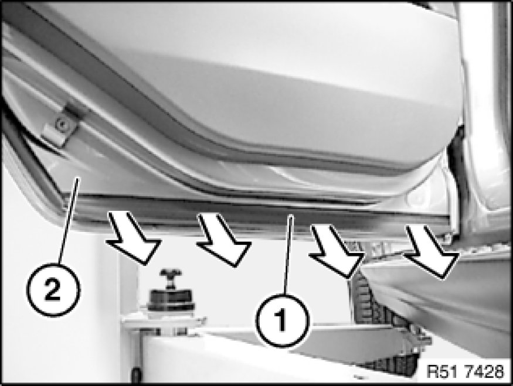
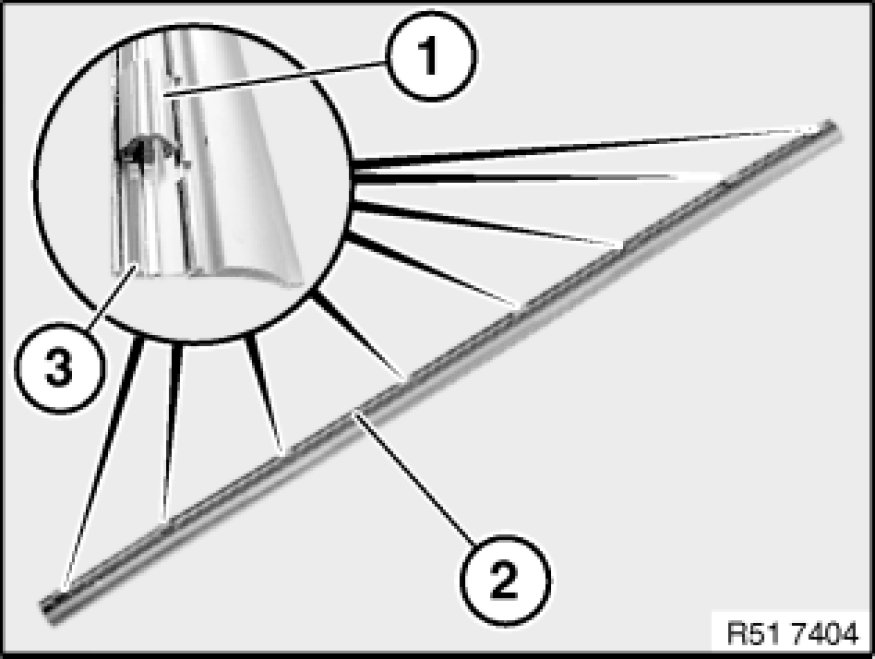

Removing and Installing/Replacing Cover at Bottom Left or Right on Rear Door
51 22 370 - Removing and installing/replacing cover at bottom left or right on rear door

Detach cover (1) in direction of arrow from rear door (2).

Installation:
Catches (1) of cover (2) must not be damaged.
Cover (2) has an aluminium insert (3).
Only press on catches (1) when installing, otherwise cover (2) will become uneven.